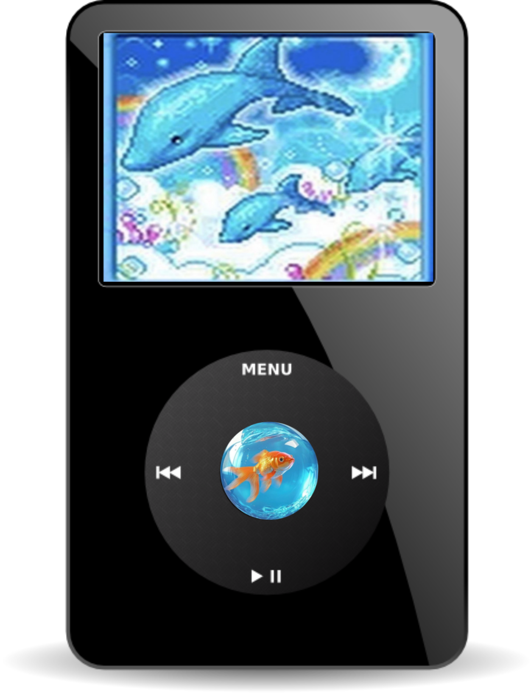

<!-- ===============================
     Frutiger Aero iPod Widget
     =============================== -->
<div id="ipod-widget">
  
  <audio id="ipod-audio" preload="auto">
    <source src="Frutiger1.mp3.mp3" type="audio/mpeg">
  </audio>
</div>

<style>
#ipod-widget {
  position: fixed;
  bottom: 20px;
  right: 20px;
  width: 120px;
  cursor: pointer;
  z-index: 1000;
}

#ipod-img {
  width: 100%;
  user-select: none;
  -webkit-user-drag: none;
  filter: drop-shadow(0 12px 30px rgba(0,0,0,0.4));
}

/* Rotate while playing */
#ipod-widget.playing #ipod-img {
  animation: ipod-spin 3s linear infinite;
}

@keyframes ipod-spin {
  from { transform: rotate(0deg); }
  to   { transform: rotate(360deg); }
}
</style>

<script>
(() => {
  const widget = document.getElementById("ipod-widget");
  const audio  = document.getElementById("ipod-audio");

  widget.addEventListener("click", () => {
    if (audio.paused) {
      audio.play();
      widget.classList.add("playing");
    } else {
      audio.pause();
      widget.classList.remove("playing");
    }
  });

  audio.addEventListener("ended", () => {
    widget.classList.remove("playing");
  });
})();
</script>
